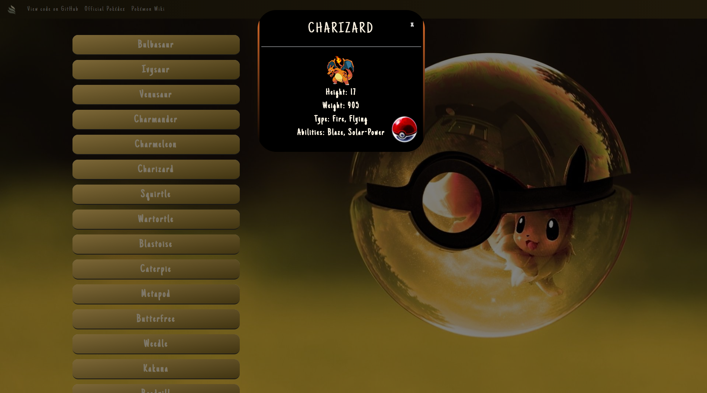

jQuery Pokedex
Gotta fetch(emAll)

Gotta fetch(emAll)
The JavaScript Pokedex app upgraded using jQuery and Bootstrap. The app loads data from an external API, displays each object on a separate button and shows further details in a modal. This project was part of the CF Full-Stack Web Development course.
This project was my first time using JavaScript libraries. The layout and functionality is almost exactly the same as that of the original, vanilla JavaScript version, but it uses different tools as its backbone.
Visit the hosted website, or check out the GitHub repo.
Besides fulfilling the task requirements, I also gave the styling a boost by creating consistent theme colors and shapes, and the project got showcased amongst student submissions in the corresponding lecture.